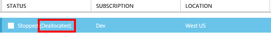

Auto Shutdown For Windows Azure VM
Thanks to the new MSDN credits that we get with our bizspack membership we have moved all of our development to Azure VMs. Now that stopped (deallocated) VMs don’t get charged we are able to have fairly large VMs for our dev machines as long as we remember to turn them off at night. In order to make sure that we don’t forget we put together a simple script that will shutdown the VM when called.
Update See Part 2 for adding SMS Notification and Cancellation
Step 1: Install and Configure Windows Azure PowerShell
Follow the instructions on Microsoft’s site to configure Azure PowerShell
Step 2: Create ShutDown.ps1
You only need a single line to shut down your azure VM
Stop-AzureVM -Name "YourVMName" -ServiceName "YourServiceName" -Force
Note: You have to use PowerShell to shutdown your VM if you don’t want to continue paying for it when it is off. When you shutdown from PowerShell or the portal your VM goes into a deallocated state. If you shutdown the VM from the operating system or from the REST API then the VM turns off, but is not deallocated so you continue to be charged.

If you don’t see Deallocated then you are still being charged for your VM.
Step 3: Setup the script to run automatically
The easiest way that I’ve found to execute the script is to tie it in to the workstation lock event.
In the screen saver settings set a timeout value and check “On resume, display logon screen”

In the task scheduler create a new task named “Shutdown”
Create a trigger that fires “On workstation lock” this will fire when the screen saver turns on.

Create a “Start a program” actions that points to “ShutDown.ps1”

Now when the VM’s screen saver turns on it will lock the machine and execute the script which will shutdown the VM.